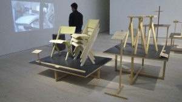

A collaboration between publisher Robin Kinross of Hyphen Press and designer Peter Brawne of Matter has resulted in a new book, Autonomy: the cover designs of Anarchy, 1961–1970, the subject of an event at Housmans bookshop in London on Saturday 9 February 2013 (6.30 pm). The author, editor & designer Daniel Poyner of New Normal studio will introduce the book followed by the designer & writer Richard Hollis who will talk about the cover designs of Anarchy. Writer & environmentalist Ken Worpole will talk about this book and also about the recent collection of Colin Ward’s writings Talking green, from Five Leaves. Anything to do with Colin Ward is always popular, so if you want to come, be sure to reserve a seat by contacting Nik @ housmans.com.
Just before Christmas we held our annual film-clip night. The theme was ‘documentary’. Choices ranged quite widely over the terrain of factual film and managed to encompass both the sublime (Humphrey Jennings) and the more-or-less absurd (Harold Baim). Wildly varied directorial approaches showed that ‘documentary’ is a large field. Here are the films from which the extracts were taken:
-
Lucy chose Sleep Furiously, directed by Gideon Koppel (2008)
Dan chose Oil City Confidential, directed by Julien Temple (2009)
Robert J chose Thin Blue Line, directed by Errol Morris (1988)
Simon chose Happy People, directed by Werner Herzog & Dmitry Vasyukov (2011)
Olly chose Into Eternity, directed by Michael Madsen (2010)
Robin chose Culloden, directed by Peter Watkins (1964)
Peter chose The Power of Nightmares, directed by Adam Curtis (2004)
Lisa chose Portrait of Jason, directed by Shirley Clarke (1967)
Robert B chose Listen to Britain, directed by Humphrey Jennings & Stewart McAllister (1942)
Jonathan chose Telly Savalas looks at Birmingham, directed by Harold Baim (1981)
Ben chose Everything is a Remix, directed by Kirby Ferguson (2010–2011)
Bunny chose Terminal Bar, directed by Stefan Nadelman (2003)
James chose Man on Wire, directed by James Marsh (2008)
Fulla chose Vernon, Florida, directed by Errol Morris (1981)
The weekend of 23–25 November saw Aileen Harvey show work with fellow artist Sarah Colman at the Folded sky exhibition in Geneva. There was much help from Mike Stoner with making the wooden stands.
Just a heads-up: next Wednesday (7 November) never mind watching TV to see who becomes president of the USA, switch to Channel 4 at 10pm to watch Secret State instead. This hour long drama, the first of four, is the latest televised script from our very own Robert Jones. For more information see here, here and here.
We recently celebrated our tenth anniversary with a grand party. A full report is here.
Robert Jones’s latest television drama, Murder, will be broadcast Sunday 26 August at 10pm on BBC2. It is directed by Birger Larsson, who is well known for directing the Danish series The Killing. Murder is set in Nottingham and has a novel narrative style in which the actors talk directly to camera. The Guardian’s TV and radio blog carries a piece written by Robert here. It has already won plaudits: Alison Graham, reviewing for Radio Times was at the press screening “…in a room full of critics, all of them tough nuts, but as the final credits rolled we were mute with shock and admiration … Murder is so good I want everyone to watch it.”
Last weekend Simon Jones & Jack Neville ran a workshop to build a 4.5m Ger structure (similar to a Yurt) on the rooftop of Wolff Olins’s London office. It was constructed by local teenagers involved with an organisation called Global Generation, and members of the public, as part of the London Festival of Architecture programme. The outcome was a very beautiful, efficient structure that proved to be surprisingly strong.
Robin Kinross recently made a very short tour of France, to accompany the publication of the French edition of his book Modern typography. Stops included the Centre Pompidou in Paris (the photo shows the announcement for his talk there) and the studio of France Culture, where he took part in a radio discussion on typography.
Simon Jones’s trestles and stacking chairs feature in a travelling Crafts Council exhibition, titled Raw Craft. Works by seven designers are assembled to illustrate an intelligent and economical approach to design and making. A short film showing Simon at work in the 115 workshop and yard can be seen here. Further information from the exhibition website is here.

Simon Jones (and his collaborator Jack) recently designed and built the Richard Hollis exhibition curated by Emily King at Gallery Libby Sellers. Richard is a good friend of 115 and a brilliant and prolific designer. The comprehensive exhibition featured around 300 different pieces of work arranged on long angled plywood display tables against a background of greyboard trays and sheets.


{kind=link}
{kind=link}
{kind=link}